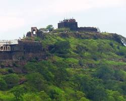
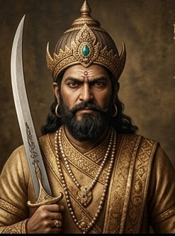
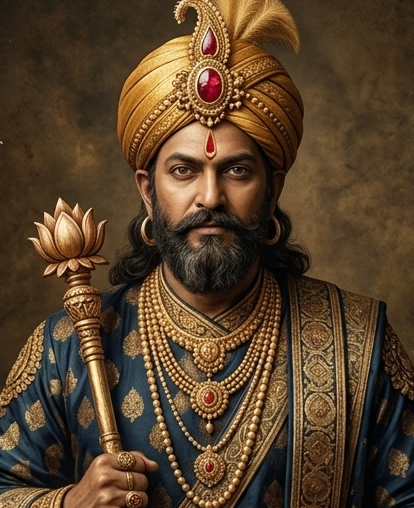
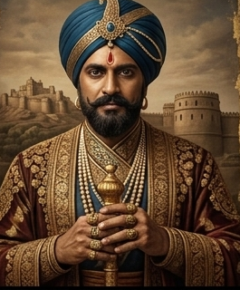
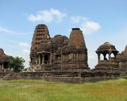
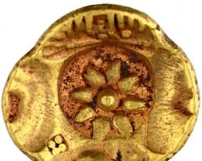
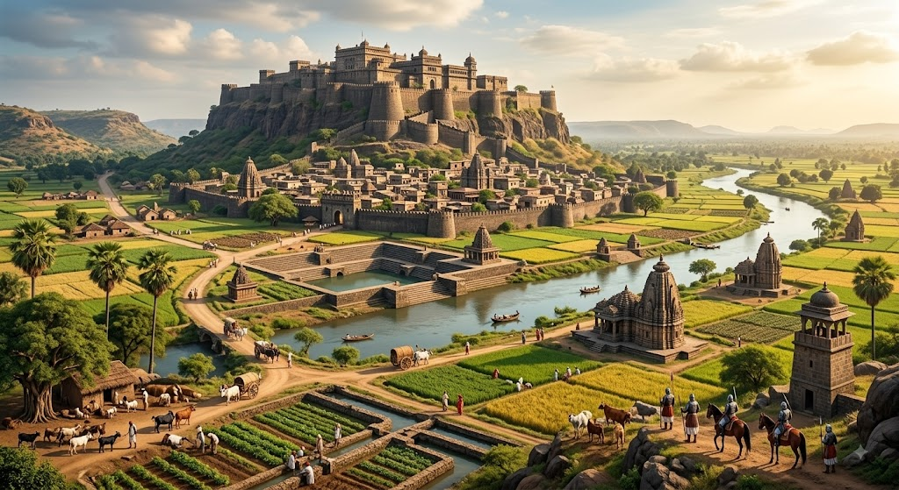
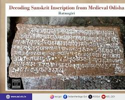

Early period
EARLY SEUNAS
Rise in Seunadesha
The early Yadava chiefs were associated with the region known as Seunadesha and served as feudatories of larger Deccan powers.
Journey into the world of the Seuna Yadavas of Devagiri — a powerful Deccan kingdom remembered for its rulers, fortified capital, literary culture and architectural legacy.
The Seuna or Yadava dynasty became one of the major powers of the medieval Deccan, with Devagiri emerging as its celebrated political centre.
The Yadavas initially served as feudatories of the Western Chalukyas before expanding their independent political power in the Deccan.
Under Bhillama V, the dynasty made a major bid for sovereignty and established Devagiri as its capital. From this strategic stronghold, the Yadavas expanded their influence across large parts of the Deccan.
Their kingdom became an important centre of political, religious and intellectual activity. Marathi, Sanskrit and Kannada traditions are represented in the inscriptional and literary record of the period.
The dynasty reached a high point under rulers including Singhana II and later Ramachandra, before facing increasing pressure from the Delhi Sultanate.

Devagiri, later known as Daulatabad, became the principal political centre of the Yadavas under Bhillama V.
Its dramatic hill-fort setting gave the capital a formidable defensive position and helped make Devagiri one of the most important strategic centres of medieval India.
Follow the transformation of the Seuna Yadavas from regional feudatories into a major Deccan kingdom.
The early Yadava chiefs were associated with the region known as Seunadesha and served as feudatories of larger Deccan powers.
Bhillama V emerged as the first major sovereign ruler of the dynasty and established Devagiri as the centre of Yadava power.
Singhana II presided over one of the most powerful phases of the dynasty, with Yadava influence expanding across substantial parts of the Deccan.
The Yadava period witnessed significant literary, religious and architectural activity, including the development of traditions associated with Hemadpanti architecture.
Ramachandra ruled during the dynasty's later powerful phase and patronised administrators, scholars and religious institutions.
Devagiri came under increasing pressure from the Delhi Sultanate, contributing to the eventual end of independent Yadava power.
Discover the rulers who shaped the rise and expansion of the Seuna Yadava kingdom.

The ruler who transformed Yadava power into an important independent Deccan kingdom.

One of the dynasty's most powerful rulers and a major figure in the expansion of Yadava influence.

A major later ruler whose reign witnessed both cultural activity and growing external pressure.
Yadava rule supported an important cultural environment in which literature, scholarship, religious traditions and architecture flourished.
Sanskrit and Marathi literary traditions developed during the Yadava period. Scholars and writers received patronage at royal and regional centres.
The medieval Deccan saw the growth of distinctive temple traditions associated with Yadava-era architectural culture.
Hemadri was an influential scholar and administrator associated with the courts of Mahadeva and Ramachandra. His Chaturvarga-chintamani is an important work.
Inscriptions across the Deccan provide evidence about rulers, administration, grants, military campaigns and cultural life.

The term Hemadpanti became associated with a medieval architectural tradition connected with the Yadava period and the scholar-administrator Hemadri, also known as Hemadpant.
Historical sources caution that many temples commonly labelled "Hemadpanti" predate Hemadri himself. The tradition therefore represents a broader architectural development rather than the work of one individual.
Devagiri formed the political heart of a kingdom that extended its influence across large areas of the Deccan.
Explore places, objects and architectural traditions connected with the medieval Deccan.


